Numbers Don’t Lie: A Mathematical Model Demonstrating the Importance of the Return of Serve in Tennis
By Siddharth Srinivasan | June 11, 2026

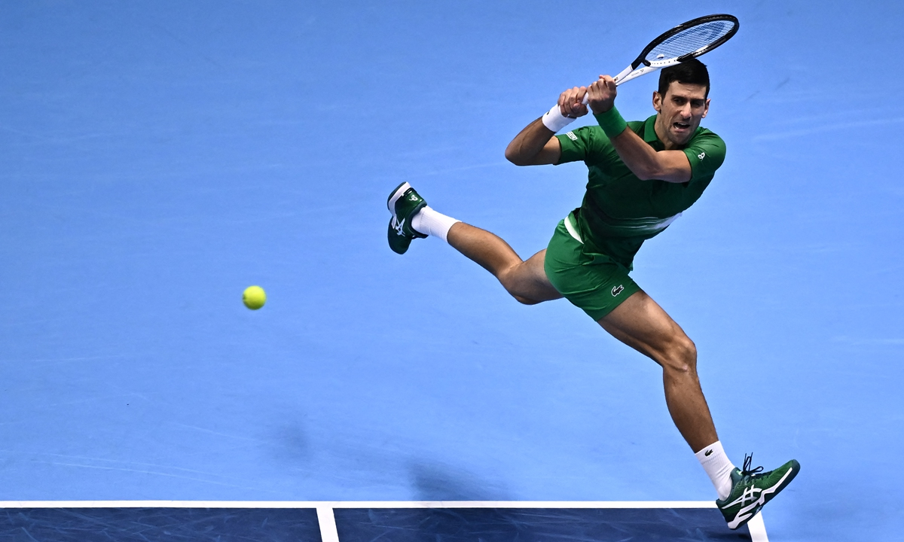
Introduction
Ever since the age of nine, tennis has become an integral part of my life, encapsulating me with its fluidity of movement and intricate choreography, synonymous to a painter's eloquent brush strokes. Over the years, competing in a wide variety of tournaments has opened my eyes to the importance of certain shots, with one of them being the return of serve. My personal struggles with the return of serve and the importance I believe it has on match outcomes as a whole, inspired me to pursue this project this past semester, exploring how probabilistically, success on the return of serve can compound into winning outcomes.
Scoring in Tennis
Since the latter portions of this paper heavily involve tennis scoring, I wanted to provide a brief overview on how scores are kept before jumping into the paper. Essentially, players alternate between serving and receiving, where breaking serve implies winning a return game and holding serve involves winning a service game. It takes 4 points to win a game, with one, two and three points won correlating to 15, 30 and 40, respectively. If the game gets to 40-40, a player must win two consecutive points to win the game. In order to win the match, players must win two sets (6 games), given a best-of-three set match.
Historical Analysis of Serve and Return Win Percentage
Concurrent with the establishment of the ATP tour, the year 1990 marked an important transition point in the sport of tennis as technological changes with graphite rackets and polyester strings took center stage, enabling players to hit with additional pace, topspin and control, ultimately ascending the level of play.
In the figure below, the average percentage of points won on the serve and return, along with ace rate from 1990 onwards was analyzed and plotted on a dual axis line graph.
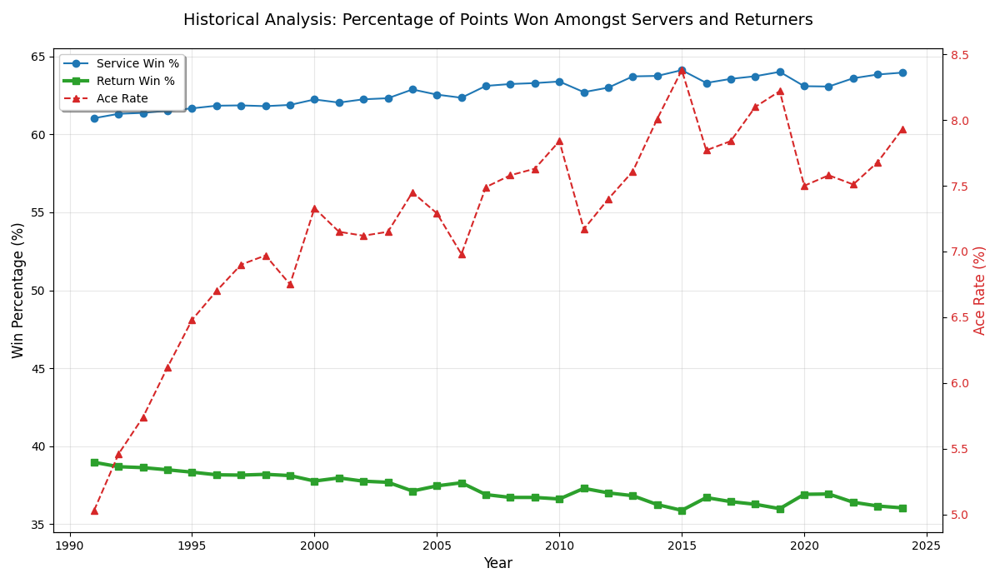
In this figure, we see that the percentage of points won on the serve and the return remained fairly constant with players winning approximately 63% of points on their serve and 37% of points on their return. However, while percentage of points won on the serve and return remained roughly the same, there was an evident rise in ace rate over the decades, rising from 5% to 8% over the span of 30-35 years. This rise in ace rate can be attributed to technical changes players like Nadal and Alcaraz made mid career to their serve to enhance biomechanical efficiency, and is also supported by claims from player coaches such as Bryan Shelton calling “[the serve] the most important shot in tennis.” While this graph encourages viewers to focus on the rise in ace rate, the predictive power of the flat green line at the bottom of the graph is beyond many of our imaginations.
What Does Ranking Say About Return?
One of the easiest ways to exhibit the effectiveness of the return is to analyze and compare differences in performance metrics between higher and lower ranked players.
The series of box plots below is one figure that is demonstrative of the general process used to determine the average percentage of points won on the return of serve and the average number of service breaks per match amongst top-10 players on the ATP tour during the 2024 season.
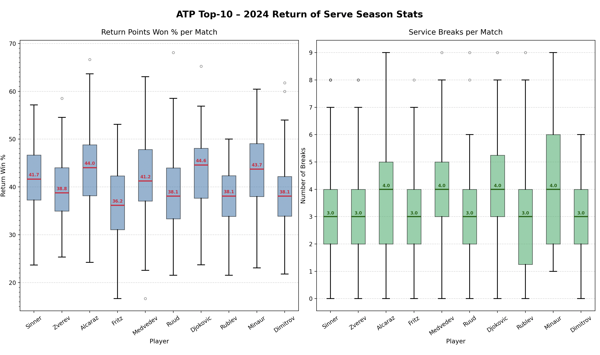
In these box plots, we can estimate that the average percentage of points won on the return of serve is somewhere around 40%, accompanied by an average of 3 breaks of serve per match for top-10 players.
Now, when comparing these results to players ranked 75-100:
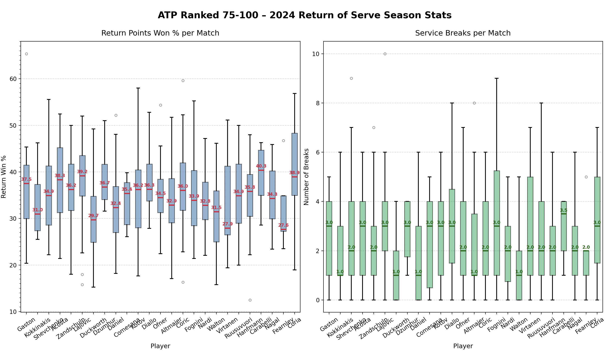
Based on the lack of containment of zero in the constructed confidence interval, the linear relationship between the percentage of points won on the return of serve and number of breaks is statistically significant. Therefore, it is plausible to conclude that players should aim to win about 37% of points on their return of serve in order to break serve three times – creating our second magic number.
For the last portion of this project, I used these two magic numbers, 3 (breaks of serve) and 37 (percent of points won on the return), in order to determine the probability of match success based on return of serve statistics.
Probabilistic Modeling: Markov Chains and Conditional Probability
In his Dartmouth commencement address, Roger Federer said: “When you lose every second point on average, you learn not to dwell on every shot,” emphasizing the importance of having the memory of a goldfish and moving forward when on a tennis court. This type of futuristic thinking is analogous to a Markov chain, a stochastic process that models a sequence of possible events, with one of its fundamental properties being that the future of the process only depends on where the process is in the present, not how it got there.
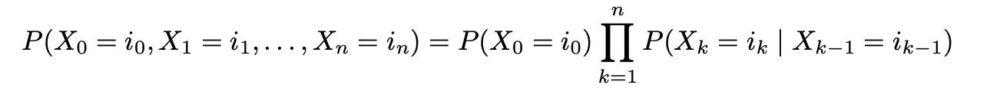
A tennis match satisfies the Markov property, with probability of reaching the next score state (or point) depending only on the current state, with the formal notation indicated above.
For a service game, the chain can only move forward (n → n+1) when there are two competing absorbing states, a hold (server wins the game) or a break (returner wins the game). In order to model this, I used the probability (p) that the server wins the point as 63% and the probability (q) that the returner wins the point as 37% based on aforementioned analysis and prior figures.
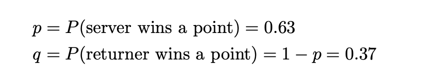
In the following section, we will explore the possible paths in which the returner can win the game. The returner breaks serve by winning 4 points before the server does, with states {0, 15, 30, 40, Deuce, Ad, Break/Hold}, mapped to indices {0, 1, 2, 3, D, A and infinity}. There are four possible cases in which this can occur, with the first three being relatively simple.
Case 1: Returner wins 4-0 (no points dropped)
In this scenario, the returner wins 4 points in a row to break serve, dropping zero points.
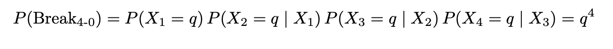
Case 2: Returner wins 4-1 (one point dropped)
Below is the case in which the returner breaks serve with only one point dropped. This scenario creates 4 possible arrangements in which the server can win one point, indicated by the 4 choose 1 notation (4! / (1! * (4-1)!)).
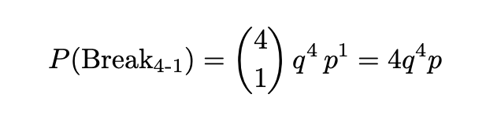
Case 3: Returner wins 4-2
Below is the scenario in which the returner breaks serve, but drops two points in the process. This scenario creates 10 possible arrangements in which the server can win two points, indicated by the 5 choose 2 notation (5! / (2! * (5-2)!)).
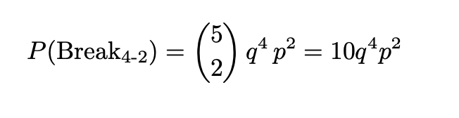
Case 4: Deuce (3-3) and Beyond
Deuce is the trickiest scenario because once the game reaches deuce, the returner must win two points in a row to win the game. Therefore, the game enters a recursive absorbing loop and forces us to split the probability of winning the game at deuce into two separate scenarios: the probability of reaching deuce and the probability of winning the game from deuce.
Below is the probability that the game reaches deuce (both players win 3 points before either can win the game). There are a total of 20 possible arrangements in which a game can reach deuce, as indicated by the 6 choose 3 notation (6! / (3! * (6-3)!)).
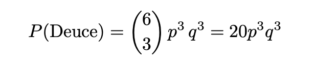
From deuce, the returner must win two consecutive points in order to win the game. The probability that the returner wins two points is expressed with q2, and the probability that the game returns to deuce is indicated by the 2pq notation, with both the server and the returner having equal probability of winning the game at either deuce or ad. The possibility that the game reverts to deuce forces an infinite geometric series as denoted below.
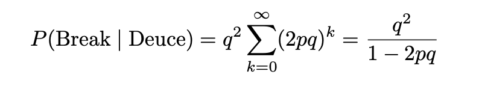
Together, multiplying the probabilities of getting to deuce and then winning the game from deuce gives us the probability that returner breaks serve if the game goes to deuce.
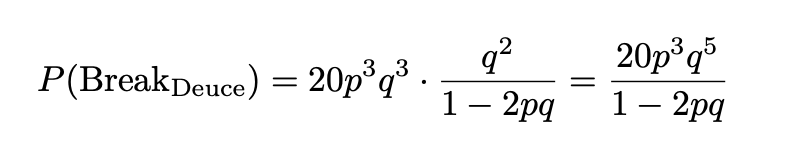
Total Probability of a Break:
Given all the different ways a player can break serve, summing all the mutually exclusive paths through the chain give us the probability that a break can occur:
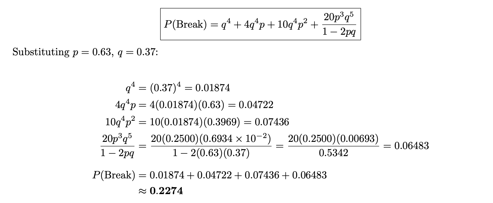
After summation, it is evident that the probability of breaking serve if players win 37% of points on the return is 22.74%.
Extending to the Match Level: Binomial Model
Operating under the assumption that a best-of-3 match contains approximately 10 games in which the returner returns serve, where each game is an independent Markov chain, the probability of achieving a certain number of breaks, K, follows a binomial distribution:
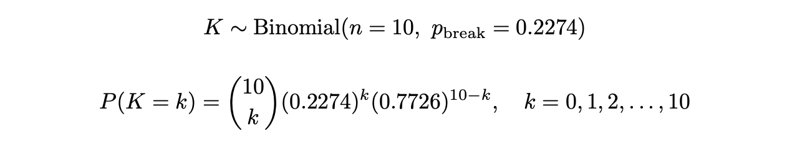
Conditional Probability of Winning Given k Breaks
Now, using the probabilities of breaking serve from the Markov chain and the probability of achieving a certain number of breaks obtained from the binomial model when treating each game as an individual Markov chain, it is possible to determine the probability of match victory based on return success using Bayes’ rule and conditional probability, as displayed below.
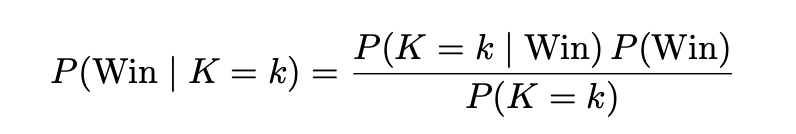
Using this formula, we can calculate the probability of victory based on how many times the player breaks serve:
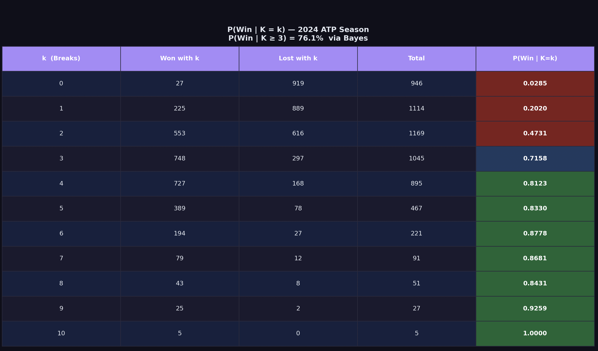
This figure signifies how breaking serve can drastically influence the probability of match success, answering a fundamental question posited earlier in the article, does return of serve really matter if top 10 players are only breaking serve one more time, on average, than bottom ranked players? Specifically, we see that the probability of winning a match increases by ~25% based on if a player breaks 2 times versus 3, which is an incredibly substantial increase.
Conclusion
Overall, this project illustrates how matches are heavily driven by return performance, with ~37% of points won on the return of serve correlating to ~3 breaks of serve, resulting in a ~71% chance of victory. Together, these results exemplify that return success is a statistically significant predictor of match control and that probabilistically, small return advantages compound into winning outcomes, underscoring the importance of the return of serve in tennis. Tennis, as a whole, is a leverage-based sport, where the return of serve is the "high-leverage" lever. While the serve is about holding ground, the return is about gaining ground.